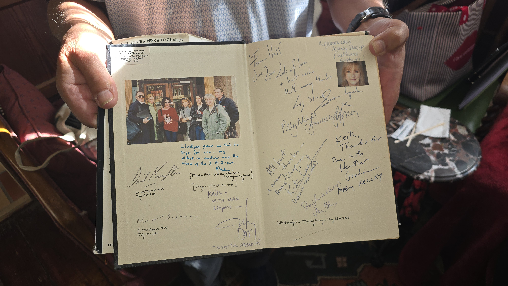
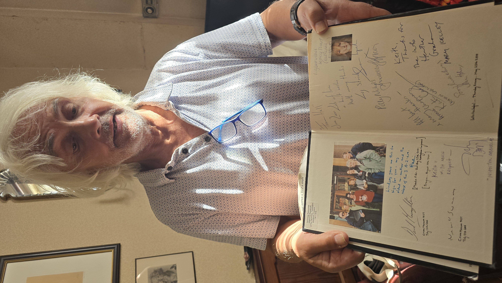
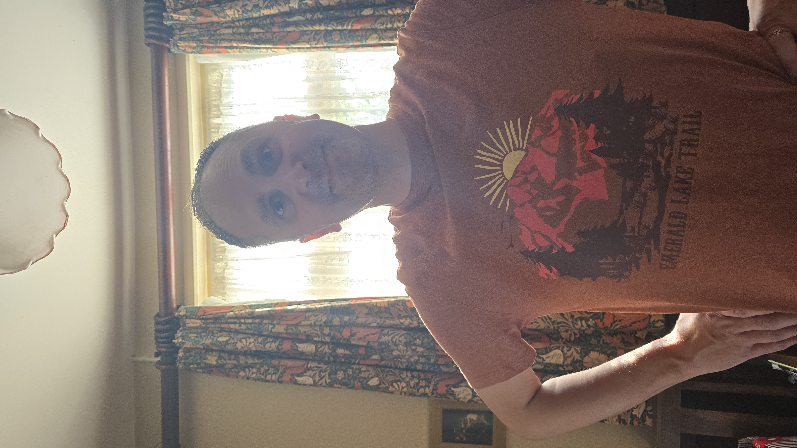
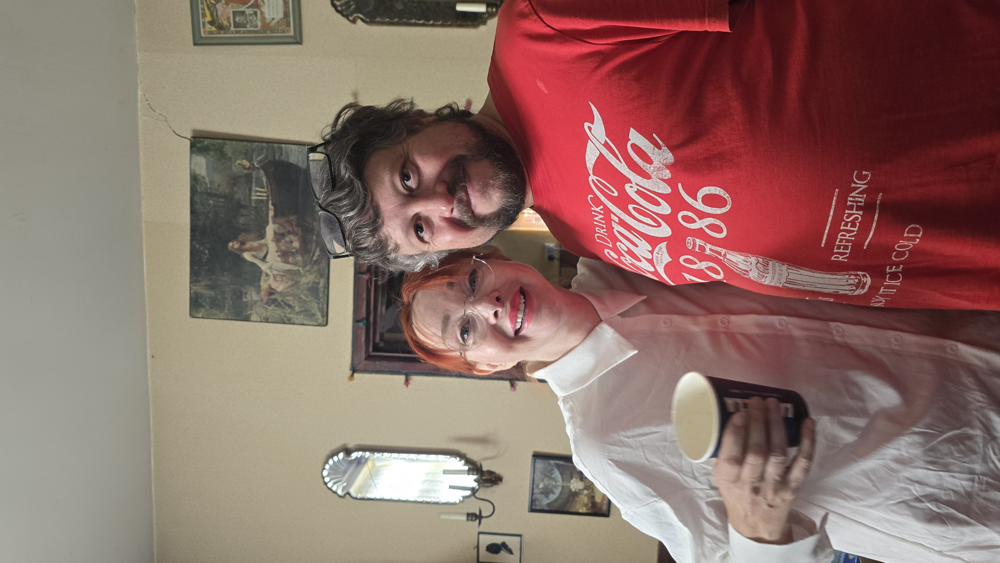
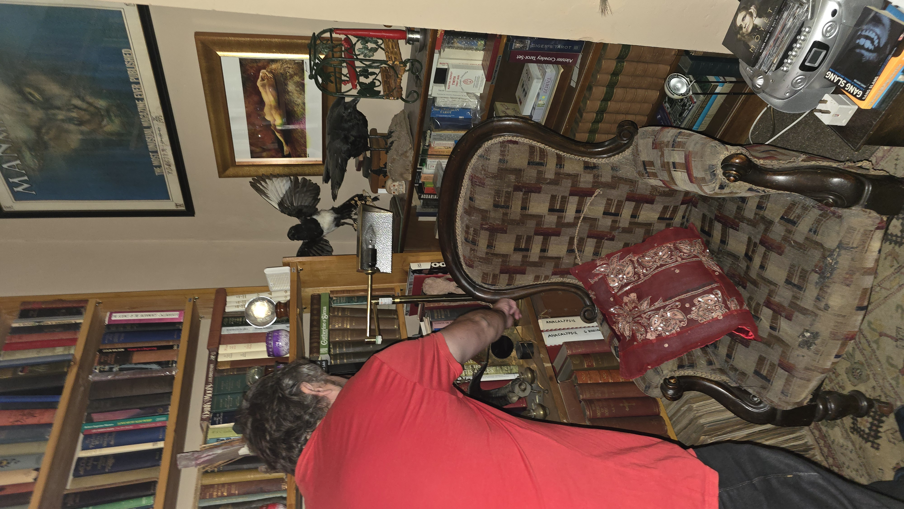
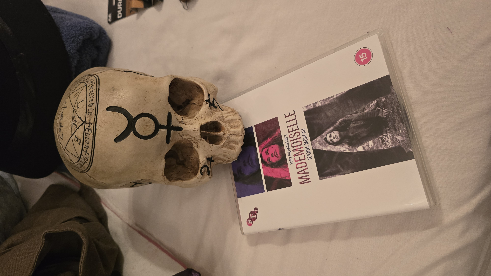
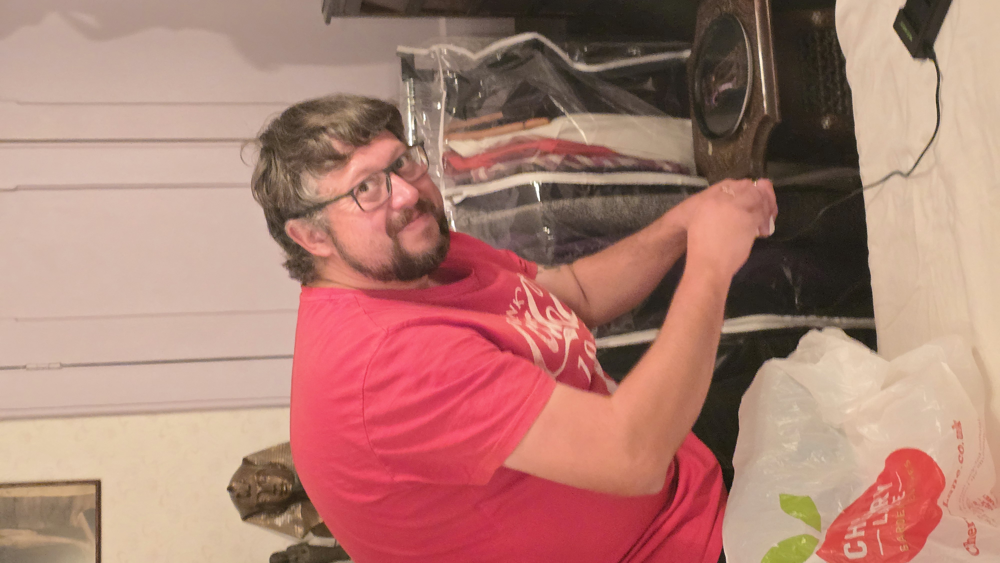

We’re on set. It’s happening.
It’s really happening.
We are on set today. Cameras are up, it’s time to start rolling. We are finally on set today, planning the shots, planning the scenes, making this happen!
Keith, and a book full of ghosts
Before anything else, this. Keith brought his copy of The Jack the Ripper A‑Z to set — the one he co‑authored — and opened it for us.


Twenty‑six years later the same man is standing in our set, making sure we get 1888 right. That’s not a coincidence we planned. It’s just what happens when you ask the right person to keep you honest.
The day itself
Set dressing, wardrobe, props, and a great deal of standing about deciding where a chair goes. This is the part nobody puts in the trailer.





Ravens, tarot, a wall of books nobody should read after dark. Somebody pressing costumes, because somebody always has to. Eileen mid‑brew and mid‑plan. And the skull sharing a table with a Mademoiselle disc — one for the film, one for the backer rewards.
Your support and pledges have been wonderful. We thank each and every one of you for sharing, posting, liking and contributing.
What’s happening now
There are seven days left on the Kickstarter. One week. Then it’s closed. Now is the time if you want to be part of our epic journey — share, pledge, support.
So, while we’re covered in fake blood, three small favours:
- Share the campaign with someone who has questionable taste in films
- Follow our new Facebook page — set photos are landing there as we shoot
- Pledge or pledge up while there’s still time
Everything extra goes straight onto the screen. Hard drives remain outrageously expensive, and the cast’s taste in catering has not improved.
Thank you for getting us here. Back to work — there’s a murder to film!
See you in the fog,
The Echoes of Crimson Team